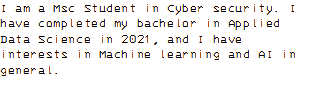

Hello GitHub!

Some of the projects I have worked on:
Machine Learning methods in Cyber Security
In a world that relies on Data that drives organizations and businesses, detecting cyber attacks and data breaches by using machine learning methods can be a reliable combination of automating the protection and confronting data breach attempts. Using machine learning classifiers for setting rules and conditions to distinguish a valid and authorized user from intruders who may take advantage of gaining access to millions of records on a platform whether it is private or official sector. The project of ML intrusion detection composed of data processing and data analysis, feature extraction, and training revised version of KDD99 cup data set for intrusion Detection. The approach is to compare and apply 5 selected ML methods and evaluate the best-resulting model in terms of accuracy and speed to a newly trained model that can be fed into a real-life network to provide a real-time confronting and detecting data breach system.